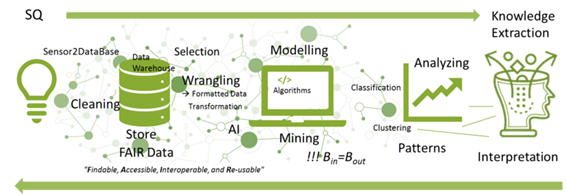

Monitoring Toolbox
Project title:
Digital Earth / Towards Smart Monitoring and Integrated Data Exploration of the Earth System - Living the Data Science Paradigm
Short project description:
In the age of digitization, significant advances in Earth system understanding can be achieved through better integration of data and knowledge from different Earth science disciplines and earth compartments into model-driven earth system analysis. The progress and improvement strongly depends on our capabilities of dealing with fast growing multi-parameter data and on our effort employing Data Science methods, adapting new algorithms and developing workflows tailored to specific scientific needs. Natural scientists and data scientists work closely together to gain new insights from the ever-growing amount and variety of research data using novel concepts and methods. Together they are looking for solutions, in particular with regard to the processing of fast-growing, multi-parameter data sets through the use of existing data science methods, the adaptation of new algorithms and the development of workflows for SMART designed monitoring concepts.
